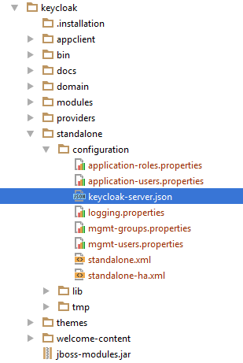

$ .../bin/standalone.shStandalone Mode
Standalone operating mode is only useful when you want to run one, and only one Keycloak server instance. It is not usable for clustered deployments and all caches are non-distributed and local-only. It is not recommended that you use standalone mode in production as you will have a single point of failure. If your standalone mode server goes down, users will not be able to log in. This mode is really only useful to test drive and play with the features of Keycloak
Standalone Boot Script
When running the server in standalone mode, there is a specific script you need to run to boot the server depending on your operating system. These scripts live in the bin/ directory of the server distribution.
Standalone Boot Scripts

To boot the server:
Linux/Unix
Windows
> ...\bin\standalone.batStandalone Configuration
The bulk of this guide walks you through how to configure infrastructure level aspects of Keycloak. These aspects are configured in a configuration file that is specific to the application server that Keycloak is a derivative of. In the standalone operation mode, this file lives in …/standalone/configuration/standalone.xml.
Standalone Config File

|
Warning
|
Any changes you make to this file while the server is running will not take effect and may even be overwritten by the server. Instead use the the command line scripting or the web console of Wildfly. See the JBoss EAP Administration and Configuration Guide for more information. |
Standalone Keycloak JSON Configuration
Keycloak has a json configuration file that is specific to Keycloak components. This configuration is located within the file_…/standalone/configuration/keycloak.json_. This file is used to configure non-infrastructure level things that are only applicable to Keycloak
Standalone Keycloak Config File

|
Warning
|
Any changes you make to this file while the server is running will not take effect. You’ll need to reboot the server. |